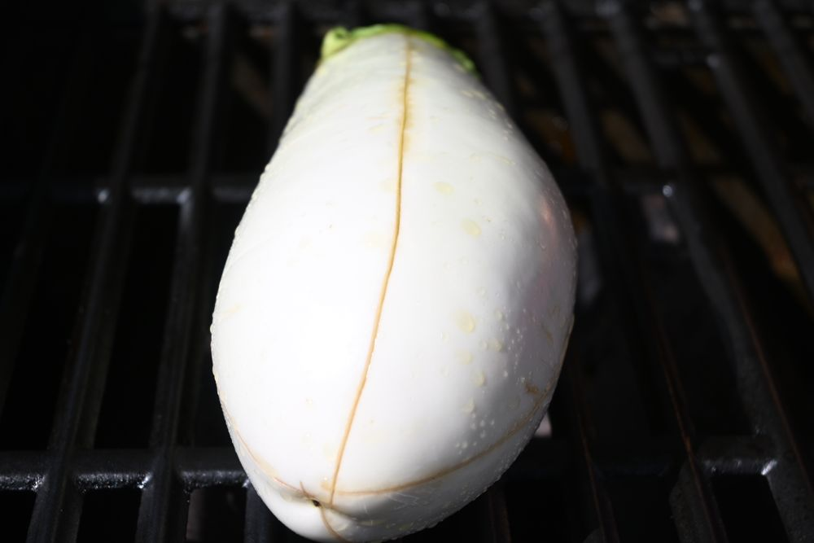
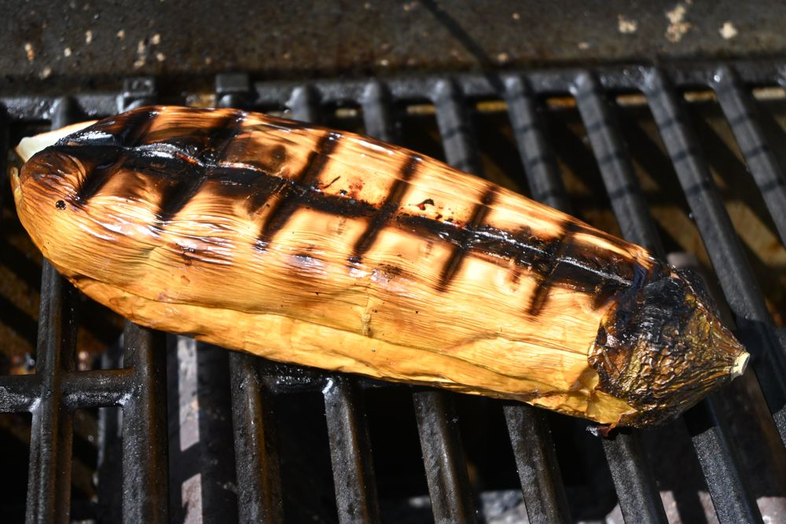
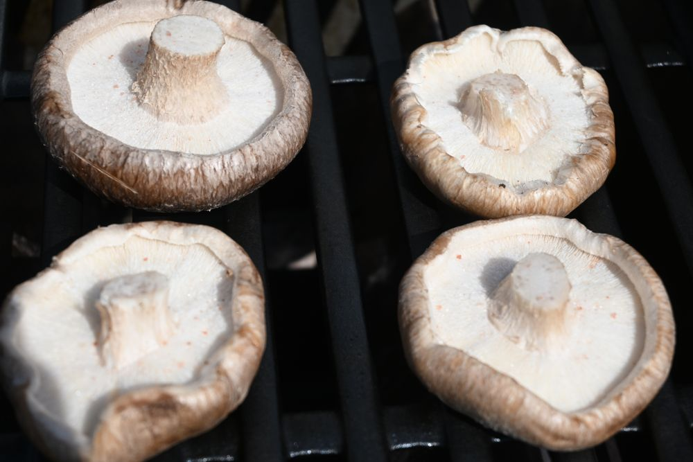
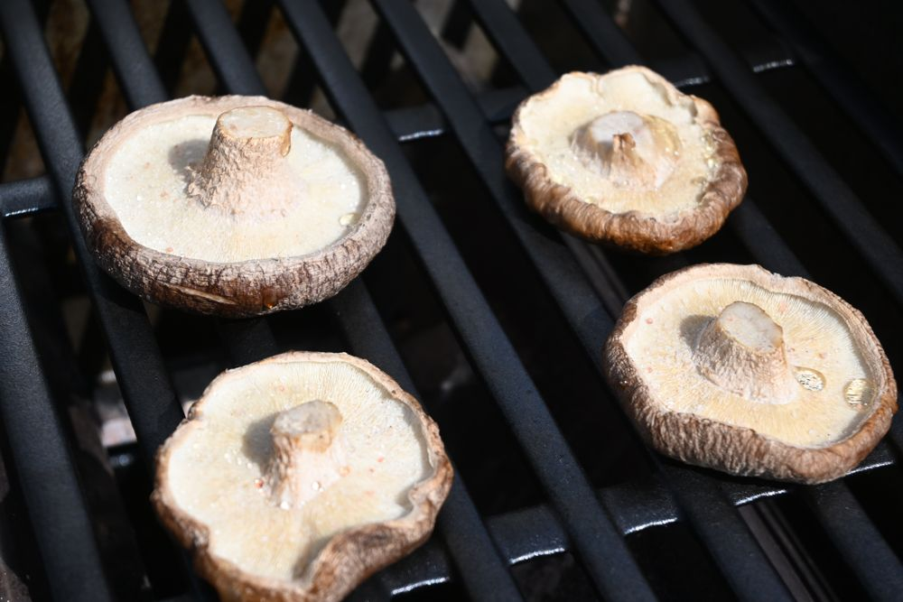
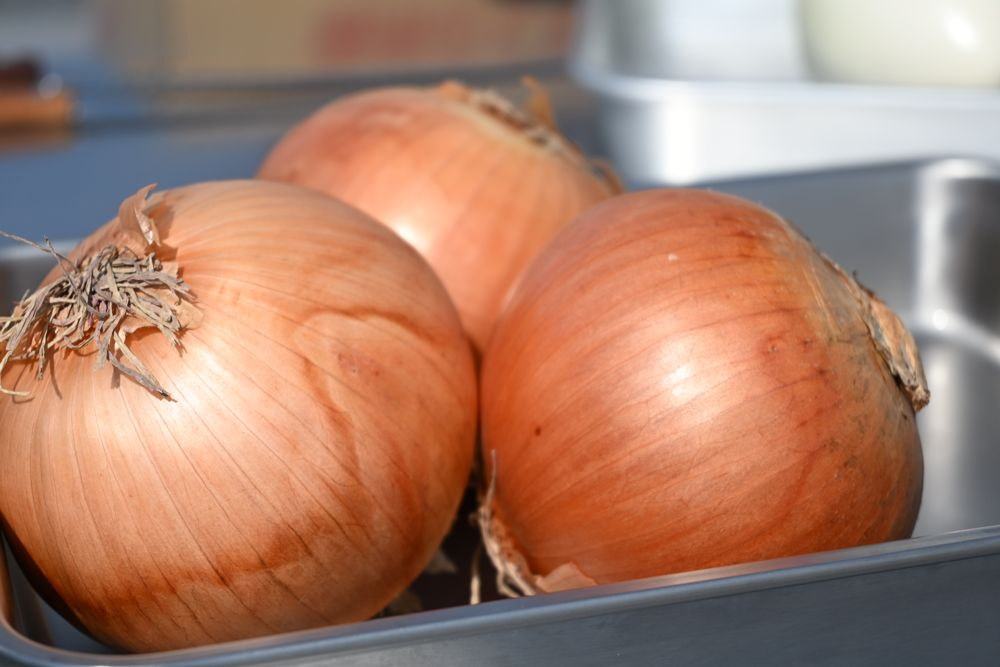
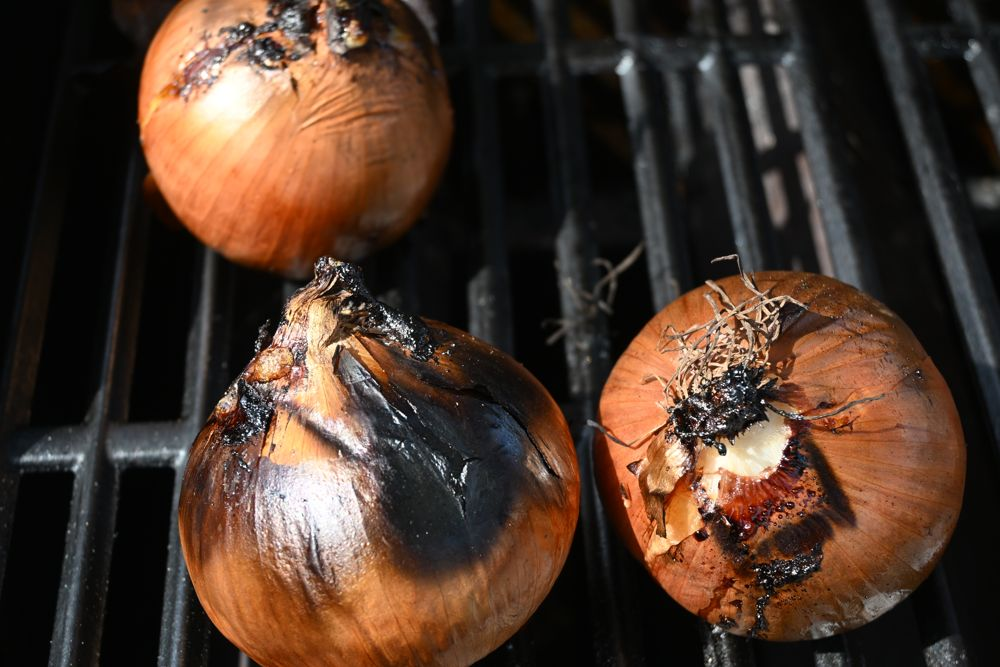

鶏肉
- 焼き時間
- 皮目を下にして6〜8分、返して5〜7分。
- 見分け方
- 中心まで白くなり、刺すと透きとおった肉汁が出たら焼けています。
COOKING GUIDE
火加減は中火。コンロの温度が200度～250度をキープするようにしましょう。
Weberの温度が250℃になったら野菜を入れてください。


オリーブオイルを皮にたっぷり塗る


軸を取り、かさのまま
皮にオリーブオイルをたっぷり塗る


皮にオリーブオイルをたっぷり塗る
火を使います。はじめる前にみんなで確認してください。
生の肉用と、焼けたもの用で分けて使います。
網や炭を動かすときは必ず着けてください。
小さい野菜や、焦げやすいものを包むのに使います。
生の肉や魚にさわったあとは、そのつど手を洗ってください。
グリルのまわりは熱くなっています。小さなお子さまから目を離さないでください。
軍手は熱が通ります。熱いものを動かすときは革手袋を使ってください。
火をつけるときはフタをあけた状態で。燃料の継ぎ足しはしないでください。